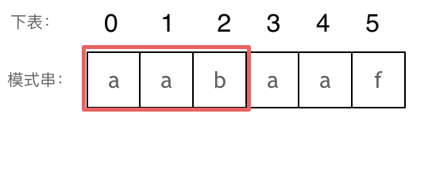

KMP算法
»>配合视频食用，效果更佳!
KMP简介
KMP算法主要用于字符串匹配。
KMP的主要思想是当出现字符串不匹配时，可以知道一部分之前已经匹配的文本内容，可以利用这些信息避免从头再去做匹配了。
前缀表
前缀表是用来匹配回溯的，它记录了模式串与主串不匹配时，模式串应该从哪里开始重新匹配。
前缀： 不包含最后一个字符的所有以第一个字符开头的连续子串。
后缀：不包含第一个字符的所有以最后一个字符结尾的连续子串。
前缀表：记录下标i之前（包括i）的字符串中，有多大长度的_相同前缀后缀_。

长度为前3个字符的子串aab，其最长相同前后缀的长度为0.
长度为前4个字符的子串aaba，其最长相同前后缀的长度为1.
利用前缀表匹配字符串：
前缀表与next数组
next数组可以有很多种版本，其影响的仅是匹配失败后回溯时依据的下标。本文采用的时前缀表统一减去一之后的版本，即
1
2
3
|
模式串： "aabaaf"
前缀表： [0, 1, 0, 1, 2, 0]
next数组：[-1, 0, -1, 0, 1, -1]
|
next数组的构建
- 初始化
- 处理前后缀不同的情况
- 处理前后缀相同的情况
1
2
3
4
5
6
7
8
9
10
11
12
13
14
15
16
17
18
|
void get_next(int *next, char *needle)
{
// 初始化
// j时前缀的末尾，也代表了前缀的长度
// 因为只有相等的时候j才推进，所以它能代表最长相等前后缀的长度，即next数组的值
int j = -1;
next[0] = j;
// 从下标为1开始遍历，i作为后缀的末尾
for(int i = 1; i < strlen(needle); i++)
{
// 由于可能存在递归回退，所以要用while
while(j >= 0 && needle[i] != neddle[j+1]) // 前后缀不相同
j = next[j]; // 回溯到前一位next数组对应的值,由于这里时j+1，所以应该是next[j]
if(needle[i] == needle[j+1]) // 相同继续推进
j++;
next[i] = j; // 将j(前缀的长度)赋值给next[i]
}
}
|
用next数组匹配
1
2
3
4
5
6
7
8
9
10
11
12
13
14
15
16
17
18
|
int KMP(char *haystack, char *needle)
{
if(strlen(needle) == 0)
return 0;
int *next = malloc(strlen(needle) * sizeof(int));
get_next(next, needle);
int j = -1;
for(int i = 0; i < strlen(haystack); i++)
{
while(j >= 0 && haystack[i] != needle[j+1]) // 回溯
j = next[j];
if(haystack[i] == needle[j+1]) // 向前遍历
j++;
if(j == strlen(needle) - 1) // 判断是否匹配完成
return(i - strlen(needle) + 1); // 返回haystack的下标
}
return -1;
}
|
C语言实现完整代码
1
2
3
4
5
6
7
8
9
10
11
12
13
14
15
16
17
18
19
20
21
22
23
24
25
26
27
28
29
30
31
32
33
34
35
36
37
38
39
40
41
42
43
44
45
46
47
48
49
50
51
|
#include <stdio.h>
#include <string.h>
#include <stdlib.h>
int KMP(char *haystack, char *needle)
{
if(strlen(needle) == 0)
return 0;
// get_next
int *next = malloc(strlen(needle) * sizeof(int));
int j = -1;
next[0] = j;
printf("next[]: [ %d ",next[0]);
for(int i = 1; i < strlen(needle); i++)
{
while(j >= 0 && needle[i] != needle[j+1])
j = next[j];
if(needle[i] == needle[j+1])
j++;
next[i] = j;
printf("%d ",next[i]);
}
printf("]\n");
// KMP
j = -1;
for(int i = 0; i < strlen(haystack); i++)
{
while(j >= 0 && haystack[i] != needle[j+1])
j = next[j];
if(haystack[i] == needle[j+1])
j++;
if(j == strlen(needle) - 1)
{
free(next);
return(i - strlen(needle) + 1);
}
}
free(next);
return -1;
}
int main(int argc, char **argv)
{
if(argc != 3)
fprintf(stderr, "Usage: ./a.out abcabcbb cab\n");
int k = KMP(argv[1], argv[2]);
printf("the index is: %d \n", k);
return 0;
}
|